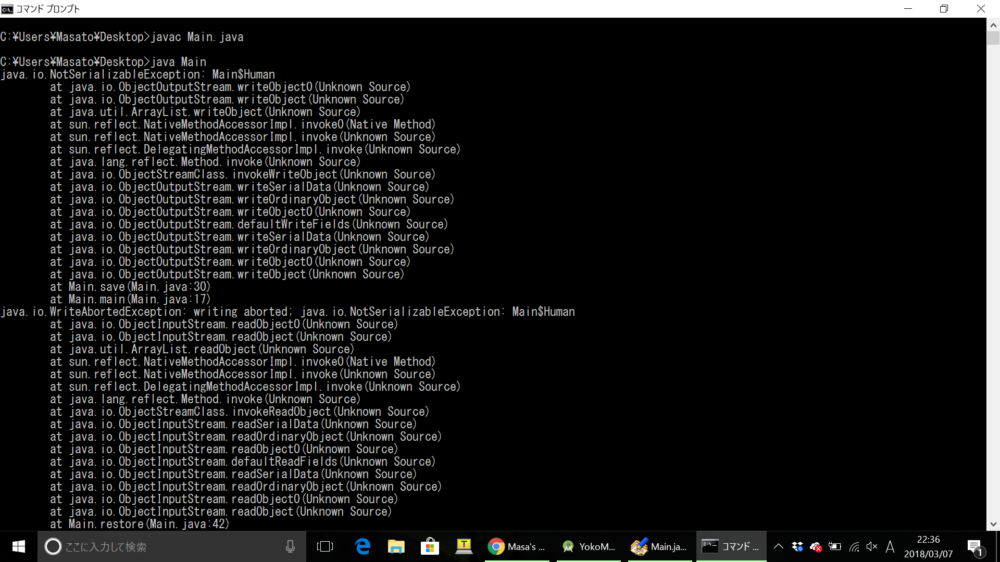

<Java> ArrayListのシリアライズ
2018/3/7 技術久しぶりにAndroidアプリを作っているんだけど、オブジェクトをシリアライズしてファイルに保存したい場面が出てきた。
今までシリアライズの存在は知ってたけど使ったことはなかったから、この際勉強してみるかと思って実験してみた。
調べてみたかった点はArrayListのシリアライズ。
ArrayListをシリアライズするときに、リストが持ってるオブジェクトたちもSerializableを実装してなきゃいけないのかが調べても出てこなかったからそれを知りたかった。
結果的にいうとリストのアイテムもSerializableを実装する必要があった。
なんとなく直観的にそうなんやろうなとは思ってたけど笑
コードはこんな感じ
import java.io.*;
import java.util.ArrayList;
public class Main {
public static void main(String[] args) {
ArrayList passengers = new ArrayList<>();
passengers.add(new Human("George"));
passengers.add(new Human("Bob"));
passengers.add(new Human("Alex"));
Car car = new Car();
car.number = 1033;
car.name = "Lexus";
car.passengers = passengers;
save(car);
car = restore();
System.out.println("car name: " + car.name);
for (Human human : car.passengers) {
System.out.println("passenger name: " + human.name);
}
}
static void save(Car car) {
try {
FileOutputStream fos = new FileOutputStream("car");
ObjectOutputStream oos = new ObjectOutputStream(fos);
oos.writeObject(car);
oos.flush();
oos.close();
} catch (Exception e) {
e.printStackTrace();
}
}
static Car restore() {
try {
FileInputStream fis = new FileInputStream("car");
ObjectInputStream ois = new ObjectInputStream(fis);
Car car = (Car) ois.readObject();
return car;
} catch (Exception e) {
e.printStackTrace();
return null;
}
}
static class Car implements Serializable {
int number;
String name;
ArrayList passengers;
}
static class Human implements Serializable {
String name;
Human(String name) {
this.name = name;
}
}
}
Serializableを実装したCarオブジェクトに、乗客としてこれまたSerializableを実装したHumanのリストを乗せてる。
このCarオブジェクトをシリアライズしてファイルに書き込んだ後、ファイルからデシリアライズしてる。
実行結果

これがHumanクラスがSerializableを実装しないと・・・
{kind=link}
シリアライズ出来ん！！と怒られてしまう。
という実験でした。
こういうちょっとしたプログラミングブログも書いていきたい。